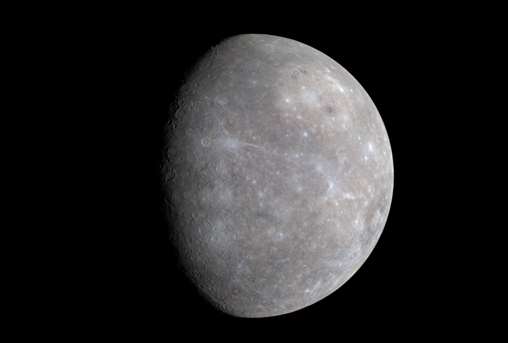

우리가 살고 있는
태양계에 대하여
내행성계 편

태양
태양계 중심에 있으며 지구에서 가장 가까운 항성이다. 본래 한국어로 해라고 한다. 지구를...

수성
태양에서 평균 5,800만 km 떨어진 가장 가까운 궤도를 도는 행성이다. 또한, 반지름 약 2,400km, 둘레 439,264km로 가장 작은 내행성이기도 하다...

금성
태양계의 두 번째 행성이다. 샛별, 새별로 불리기도 했다. 태양 주위를 224일 주기로 돌고 있으며 달에 이어서 밤하늘에서 두 번째로 밝은 천체이다...

지구
태양으로부터 세 번째 행성이며, 얇은 대기층으로 둘러싸여 있고, 지금까지 발견된 지구형 행성 가운데 가장 크다. 지구는 45억 6700만 년 전 형성되었으며, 지구와 행성 테이아의 격렬한 충돌로 생성되었을 달을 위성으로 둔다...

화성
태양계의 네 번째 행성이며, 4개의 지구형 행성 중 하나다. 붉은색을 띠기 때문에 동양권에서는 불을 뜻하는 화(火)를 써서 화성 또는 형혹성(熒惑星)이라 부르고, 서양권에서는 로마 신화의 전쟁의 신 마르스의 이름을 따 Mars라 부른다...